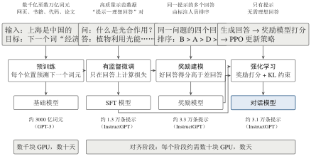
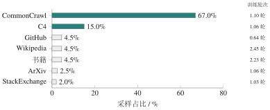

2.6 模型构建全景：从基础模型到对话模型
前几节讲的都是“已经训练好的模型怎样计算”。一个对话模型是怎样从零训练出来的？本节先说明大模型训练的三个要点和工程上的主要步骤，再给出以 ChatGPT 为代表的对话模型构建的四个阶段：预训练让模型从海量文本中学到知识，消耗绝大部分算力，产出只会“续写”的基础模型；有监督微调教它按指令回答；奖励建模训练一个“裁判”；强化学习让模型在裁判的打分下继续改进。本节只讲各阶段的数据、目标、产出与直觉，具体方法见第 3 章，训练所依赖的计算系统见第 4 章。
2.6.1 训练的三个要点与工程步骤
从方法上看，大模型的训练有三个要点：
大规模数据：获得大量经过整理的文本，来源包括书籍、文章、代码和网站等。
自监督学习：训练的“标签”就是文本自己的下一个词元（第 2.2.1 小节），不需要人工标注。这是数据规模能扩大到万亿词元的根本原因。
不更新参数也能完成新任务：预训练完成后，模型可以只凭任务描述完成任务（零样本学习），或在提示中看几个示例后完成任务（少样本学习）。这种在上下文中学习的能力就是上下文学习（第 2.4.6 小节），围绕它发展出了提示工程（prompt engineering）。
从工程上看，训练一个大模型要经过表 2-11 中的步骤：前 6 步解决“怎样把训练跑起来”，后 5 步解决“怎样跑稳、跑好、用起来”。其中分布式框架、数据并行与模型并行属于计算系统的内容，详见第 4.3 节。
表 2-11 训练大模型的工程步骤
| 步骤 | 要做什么 | 关键考量 |
|---|---|---|
| 1. 数据准备 | 从互联网等来源收集、清洗、去重、分词 | 质量与多样性决定模型上限 |
| 2. 模型架构选择 | 选 GPT 类解码器或其变体，确定层数、宽度、参数量 | 按任务与预算定规模（第 2.4.3 小节） |
| 3. 分布式计算框架 | 选用 PyTorch、TensorFlow、Horovod、DeepSpeed 等 | 让多个 GPU 或 TPU 协同工作 |
| 4. 数据并行 | 把数据切成小批次分给不同节点，各自计算后同步梯度 | 提高吞吐 |
| 5. 模型并行 | 把模型的不同层或张量切片放到不同节点 | 单卡放不下时必须使用 |
| 6. 数据分布策略 | 把数据放在分布式文件系统或云存储中，让各节点高效读取 | 读数据不能成为瓶颈 |
| 7. 超参数调整 | 调整学习率、批大小、训练轮次等 | 大模型试错成本高，常先在小模型上外推 |
| 8. 监控与调试 | 用日志和可视化工具跟踪损失、梯度范数等 | 及时发现损失突刺和发散 |
| 9. 扩展性与容错 | 支持动态增加节点，定期保存检查点 | 数千卡训练中硬件故障是常态 |
| 10. 模型评估 | 在各类基准任务上验证性能 | 防止测试集泄露到训练数据 |
| 11. 部署与应用 | 部署到生产环境，用于生成、翻译、问答等 | 推理延迟与成本（第 4.4 节） |
2.6.2 四个阶段总览
对话模型的构建分为四个阶段（图 2-12）：预训练、有监督微调（SFT）、奖励建模和强化学习。前三个阶段依次在上一阶段产出的模型上继续训练；强化学习并不在奖励模型上继续训练，而是接回第二阶段得到的 SFT 模型继续优化，奖励模型只是另训的一个“裁判”，在强化学习阶段负责打分。第一阶段让模型“学到知识”，后三个阶段让模型“学会说话”，即把模型的行为对齐到人类的期望，统称对齐（alignment）。这一流程由 OpenAI 在 2022 年的 InstructGPT 工作中系统化[49]。表 2-12 列出了各阶段的数据、目标与资源。

表 2-12 对话模型构建的四个阶段
| 阶段 | 数据 | 训练目标 | 产出 | 典型资源 |
|---|---|---|---|---|
| 预训练 | 数千亿至数万亿词元的网页、书籍、代码、论文 | 预测下一个词元 | 基础模型 | 数千块 GPU，数十天 |
| 有监督微调 | 数万条高质量“提示—理想回答”对 | 在回答部分预测下一个词元 | SFT 模型 | 数十块 GPU，数天 |
| 奖励建模 | 同一提示下多个回答的人工排序 | 好回答得分高于差回答 | 奖励模型 | 数十块 GPU，数天 |
| 强化学习 | 数万至十万量级的提示，无需理想回答 | 最大化奖励，且不偏离 SFT 模型太远 | 对话模型 | 数十块 GPU，数天 |
2.6.3 预训练：从海量文本中学到知识
预训练利用海量数据，包括互联网网页、维基百科、书籍、GitHub 代码、论文、问答网站等，构建数千亿乃至数万亿词元的多样化语料，在由数千块 GPU 和高速网络组成的集群上花费数十天训练，得到基础模型（base model）。训练目标就是式 （2-5）。
不同来源的数据要按一定比例混合。图 2-13 是 Meta 公开的 LLaMA 预训练数据配比[20]。从中可以看出两个常见做法：网页数据提供规模和多样性，是语料的主体；维基百科、书籍这类高质量数据总量有限，就通过多轮重复来提高权重。近年的趋势是质量比数量更重要：微软的 Phi 系列用精选和合成的“教科书级”数据，让小模型达到了超出其规模的效果[50]。另一方面，人类公开的高质量文本可能在未来几年内被用尽，这被称为“数据墙”问题，合成数据因此成为重要的研究方向。原始网页怎样经过正文抽取、语言识别、去重、隐私脱敏、质量打分、数据配比、分词、测试集去污染和序列打包变成训练样本，见第 3.3 节。

图 2-13 LLaMA 预训练数据的采样占比与训练轮次（据文献 [20]，共约 1.4 万亿词元）。两类网页数据合计 82%；维基百科和书籍占比小，但被重复训练两遍以上
预训练消耗了整个流程的绝大部分算力。用第 2.4.2 小节的公式可以核对一个公开数字。
例 2-8 GPT-3 预训练需要多少算力和时间
GPT-3 论文报告一次完整训练的计算量约为 3640 PF-days[19]（1 PF-day 指以 \(10^{15}\) 次/秒的速度运行一天）。(1) 把它换算成浮点运算次数，并用 \(C\approx6ND\) 核对；(2) 若用 1000 块 A100、平均利用率 50%，需要多少天？
| 步骤 | 算什么 | 算式 | 结果 | 这个数从哪来 |
|---|---|---|---|---|
| 1 | 换算总量 | \(3640\times10^{15}\times86\,400\) | \(3.14\times10^{23}\) | 1 天 \(=86\,400\) s |
| 2 | 公式核对 | \(6\times(1.75\times10^{11})\times(3\times10^{11})\) | \(3.15\times10^{23}\) | 式 （2-19），\(N\)、\(D\) 见表 2-4 |
| 3 | 集群算力 | \(1000\times(312\times10^{12})\times0.5\) | \(1.56\times10^{17}\) FLOP/s | A100 BF16 峰值，利用率 50% |
| 4 | 训练秒数 | \((3.14\times10^{23})\div(1.56\times10^{17})\) | \(2.0\times10^{6}\) s | 第 1、3 步 |
| 5 | 换算成天 | \((2.0\times10^{6})\div86\,400\) | 约 23 天 | — |
数据流向：PF-days \(\to\) FLOP（与 \(6ND\) 互相印证）；卡数 \(\times\) 峰值 \(\times\) 利用率 \(\to\) 有效算力；总量 \(\div\) 有效算力 \(\to\) 时间。两种算法的结果几乎完全一致，1000 块 A100 约需 23 天，接近一个月。注意 3640 PF-days 是计算量，不是“3640 PFLOPS”这样的算力：前者是总共做了多少次运算，后者是每秒能做多少次。
预训练得到的基础模型知识丰富，但它只会“续写”，不会“回答”。例如输入“中国的首都是哪里？”，基础模型很可能接着写出“美国的首都是哪里？日本的首都是哪里？”，因为在网页上，这样的问题常常是一串考题。让它学会听指令，是后续三个阶段的任务。
2.6.4 有监督微调：学会按指令回答
有监督微调（Supervised Fine-Tuning，SFT）使用少量高质量数据，每条数据包含一个用户提示词（prompt）和对应的理想回答。训练算法与预训练相同，仍是预测下一个词元，只是只对回答部分计算损失：模型学的是“怎样回答”，而不是“怎样提问”。这一阶段也称为指令微调（instruction tuning）。
一条 SFT 数据送入模型前，会被套进一个对话模板，用特殊标记区分系统提示、用户和助手的发言。不同模型的标记写法不同，下面是一个示意：
<|system|>你是一个乐于助人的助手。
<|user|>用一句话解释什么是光合作用。
<|assistant|>光合作用是植物利用光能，把二氧化碳和水转化为有机物并释放氧气。<|end|>训练时整段文本都作为输入，但只有 <|assistant|> 之后的词元（包括结束标记）计入损失，前面部分的损失权重置为 0。让模型学会生成结束标记也很重要，否则它会在回答完之后继续自说自话，甚至替用户提出下一个问题。
InstructGPT 的 SFT 数据只有约 1.3 万条提示[49]，相对预训练的数千亿词元微不足道，却显著改变了模型的行为。Meta 的 LIMA 工作（2023）更进一步：只用 1000 条精心挑选的样本微调 650 亿参数的 LLaMA，效果就已相当不错[51]。作者据此提出“表面对齐假说”：模型的知识和能力几乎全部来自预训练，对齐主要是教它用什么格式和风格与用户交互。由此得到一条工程原则：SFT 数据的质量和多样性远比数量重要。经过 SFT 的模型具备了初步的指令理解和上下文理解能力，能完成开放领域问答、阅读理解、翻译、代码生成等任务，对没见过的任务也有一定泛化能力，可以开放给用户使用，许多开源对话模型就停在这一阶段。SFT 数据的来源（人工撰写、改写已有数据集、由更强的模型生成）见第 3.6 节，LoRA 等参数高效微调方法见第 3.7 节。
2.6.5 奖励建模：训练一个裁判
SFT 只能模仿示范回答，而写出完美的回答很难。对人类来说，判断哪个回答更好，远比亲自写出最好的回答容易。奖励建模就利用了这一点：对同一个提示，让 SFT 模型生成多个回答（InstructGPT 中为 4～9 个），由标注人员按质量排序；再把排序拆成若干“好回答 \(y_w\) 优于差回答 \(y_l\)”的对子，训练一个打分模型 \(r(x,y)\)，让好回答的得分高于差回答。例如对 4 个回答 A、B、C、D 排出 B \(>\) A \(>\) D \(>\) C，任取两个都能比出高下，一次排序就得到 \(\binom{4}{2}=6\) 个偏好对。
训练损失只取决于两个回答的得分差： \[\mathcal{L}_{\mathrm{RM}} = -\log\sigma\bigl(r(x,y_w)-r(x,y_l)\bigr), \tag{2-24}\] 得分差越大（越确信好回答更好），损失越小。因此奖励模型的分数只有相对意义，绝对数值没有含义；它学到的也是标注人员的偏好，而不是客观的“好坏”——如果标注人员偏爱更长、更自信的回答，奖励模型也会继承这种偏好。奖励模型通常从 SFT 模型初始化，把输出层换成一个输出标量分数的线性层，InstructGPT 的奖励模型有 60 亿参数。与基础模型和 SFT 模型不同，奖励模型本身不能单独提供给用户使用，它只是下一阶段的裁判；训练资源与 SFT 相当，通常是数十块 GPU、数天。这个损失的形式及其来源（Bradley–Terry 模型）、梯度分析和数值算例（例 3-8）见第 3.8 节式 （3-28）。
2.6.6 强化学习：在裁判的打分下改进
强化学习阶段把前三个阶段的成果组合起来：对大量提示，当前模型生成回答，奖励模型给出评分，再用强化学习算法更新模型参数，让高分回答的概率变大、低分回答的概率变小。这就是基于人类反馈的强化学习（RLHF），常用算法是近端策略优化（PPO）[52]。
只追求高分是危险的：模型会找到奖励模型的漏洞并加以利用，例如生成越来越长、堆砌套话却得分很高的回答，这称为奖励作弊（reward hacking，也译奖励破解）。因此优化目标还要加一项约束，惩罚当前模型的输出分布偏离 SFT 模型太远（用 KL 散度衡量，它是度量两个概率分布差异的指标，分布相同时为 0），也就是把“追求奖励”与“保持语言模型原有的建模能力”综合起来： \[\max_{\pi_\theta}\ \mathbb{E}\bigl[r(x,y)\bigr] - \beta\,\mathrm{KL}\bigl(\pi_\theta\,\Vert\,\pi_{\mathrm{SFT}}\bigr), \tag{2-25}\] 其中 \(\pi_\theta\) 是正在训练的模型（在强化学习中称为策略），\(\beta\) 控制约束的强弱。
这一阶段的提示数量与 SFT 阶段同一量级，但不需要人工预先写出理想回答；计算量远小于预训练，通常也只需数十块 GPU、数天。效果却很显著：InstructGPT 论文报告，经过 RLHF 的 13 亿参数模型，其回答比 1750 亿参数的 GPT-3 更受标注人员偏爱[49]。
PPO 的一次迭代要同时协调策略模型、参考模型（冻结的 SFT 模型）、奖励模型和价值模型四个模型，工程上复杂、超参数敏感。这推动了后来的简化：直接偏好优化（DPO，2023）跳过奖励模型和强化学习，直接用偏好对训练模型[53]；DeepSeek-R1（2025）等推理模型在数学、代码等答案可以自动验证的任务上，用规则给出的奖励代替人类打分，并采用去掉价值模型的 GRPO 算法做大规模强化学习[21]。PPO 的裁剪目标与四个模型的分工、DPO 的损失，以及 GRPO 和基于可验证奖励的强化学习，见第 3.8 节。
辨析
SFT 与 RLHF 都在“对齐”，学习信号却不同。SFT 是模仿：给出标准答案，让模型逐词元地照着写，上限是示范数据的质量。RLHF 是比较：不给标准答案，只告诉模型它自己生成的回答哪个更好，因此能超出示范数据，但依赖奖励模型的质量，并有奖励作弊的风险。实践中两者先后使用：先用 SFT 把模型带到“会按格式回答”，再用 RLHF 在此基础上继续改进。
本节要点
四个阶段：预训练（知识，绝大部分算力）\(\to\) SFT（按指令回答）\(\to\) 奖励建模（训练裁判）\(\to\) 强化学习（在裁判打分与 KL 约束下改进）。
基础模型只会续写；SFT 只在回答部分算损失；奖励模型只学得分差，不直接给用户使用。
GPT-3 预训练约 \(3.14\times10^{23}\) 次浮点运算，与 \(6ND\) 吻合；1000 块 A100、50% 利用率约需 23 天。